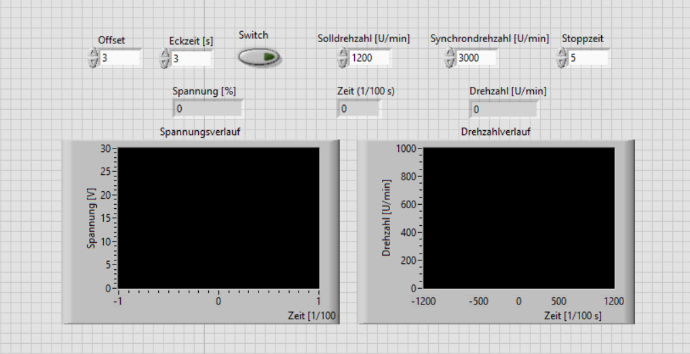
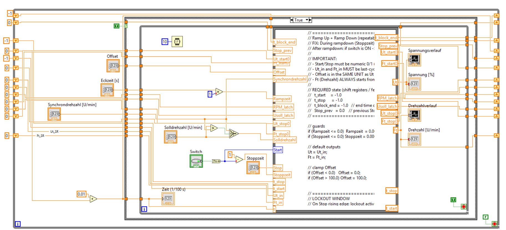
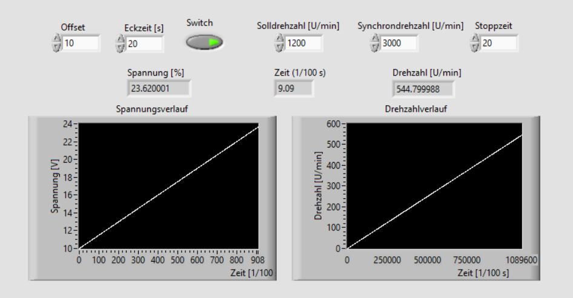
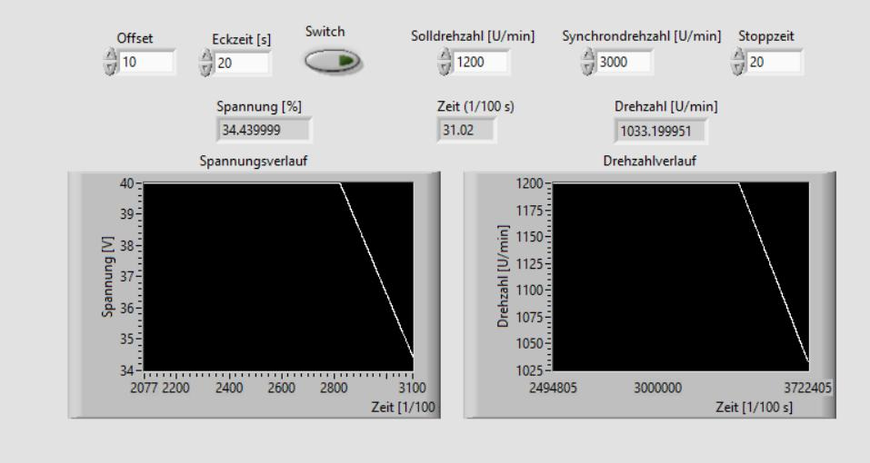
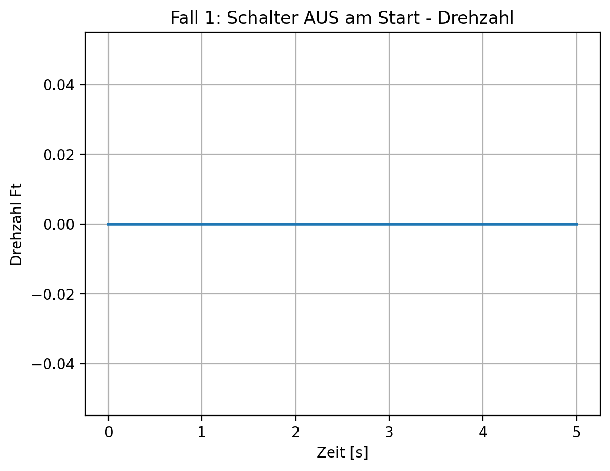

Test-bench automation for the Nuevo 35 drivePrüfstandsautomatisierung für den Nuevo-35-Antrieb
NI LabVIEW program that controls the start-up and shut-down of a motor on the test bench of the FH Dortmund project GREEN-GEN Nuevo 35. I replaced the abrupt stop with a controlled ramp-down, corrected the voltage and time calculations and added a restart lockout – work package AP2 “test-bench automation”, team vehicle electronics.NI-LabVIEW-Programm zur Steuerung von Hoch- und Herunterlauf eines Motors am Prüfstand des FH-Dortmund-Projekts GREEN-GEN Nuevo 35. Ich habe den abrupten Stopp durch einen kontrollierten Ramp-Down ersetzt, die Spannungs- und Zeitberechnung korrigiert und eine Neustartsperre ergänzt – Arbeitspaket AP2 „Prüfstandautomatisierung“, Team Fahrzeugelektronik.

Project contextProjektkontext
GREEN-GEN Nuevo 35 is a master's project at FH Dortmund, Faculty of Mechanical Engineering with Prof. Dr. Stefan Hesterberg, Prof. Dr. Vinod Rajamani and Prof. Dr. Markus Thoben as clients, split into work packages. Work package AP2 – test-bench automation (team vehicle electronics) develops the LabVIEW software that drives the motor on the test bench: the user sets offset, ramp time, stop time, target speed and synchronous speed, and the program computes the voltage set-point (in %) and the speed over time and shows both live.GREEN-GEN Nuevo 35 ist ein Masterprojekt an der FH Dortmund, Fachbereich Maschinenbau mit Prof. Dr. Stefan Hesterberg, Prof. Dr. Vinod Rajamani und Prof. Dr. Markus Thoben als Auftraggebern, aufgeteilt in Arbeitspakete. Das Arbeitspaket AP2 – Prüfstandautomatisierung (Team Fahrzeugelektronik) entwickelt die LabVIEW-Software, die den Motor am Prüfstand ansteuert: Der Bediener gibt Offset, Rampzeit, Stoppzeit, Soll- und Synchrondrehzahl vor, das Programm berechnet daraus den Spannungs-Sollwert (in %) und die Drehzahl über der Zeit und zeigt beide live an.
Starting situationAusgangssituation
ProblemProblem
- The existing program already ramped the motor up in a controlled way, but pressing Stop ended it immediately – no deceleration, which the project rated as a considerable safety risk.Das bestehende Programm fuhr den Motor bereits kontrolliert hoch, aber beim Drücken von Stop hielt es sofort an – ohne Abbremsen, was im Projekt als erhebliches Sicherheitsrisiko bewertet wurde.
- Interim state at the end of SoSe 2025: ramp-up and ramp-down existed, but the voltage and time calculations were wrong, so the program behaved incorrectly; in December 2025 the values were still not shown correctly in the charts and indicators.Zwischenstand Ende SoSe 2025: Ramp-Up und Ramp-Down waren vorhanden, aber die Spannungs- und Zeitberechnung war fehlerhaft und das Programm verhielt sich falsch; im Dezember 2025 wurden die Werte in Diagrammen und Anzeigen noch nicht korrekt übernommen.
GoalZiel
- Replace the abrupt stop with a smooth, controlled deceleration.Abrupten Stopp durch sanftes, kontrolliertes Abbremsen ersetzen.
- Reliable ramp-up and ramp-down functions.Zuverlässige Ramp-Up- und Ramp-Down-Funktionen.
- Correct voltage and time calculations.Korrekte Spannungs- und Zeitberechnung.
- Improve system safety.Systemsicherheit verbessern.
My roleMeine Rolle
I was responsible for the NI LabVIEW test-bench software in AP2 and am named as the person in charge (Bearbeiter) in the handover protocol of 25.03.2026. In SoSe 2025 AP2 started as a team of three (Abdallah Abdelnaby, Burak Gül and me); my documentation, final presentation and handover cover WS 2025/26.Ich war in AP2 verantwortlich für die NI-LabVIEW-Software des Prüfstands und bin im Übergabeprotokoll vom 25.03.2026 als Bearbeiter genannt. Im SoSe 2025 startete AP2 als Dreierteam (Abdallah Abdelnaby, Burak Gül und ich); meine Dokumentation, Abschlusspräsentation und Übergabe umfassen das WS 2025/26.
- Code analysis: analysed the existing program of the previous team and identified the missing part of the code.Code-Analyse: bestehendes Programm des Vorgängerteams analysiert und den fehlenden Codeteil identifiziert.
- Ramp logic: implemented and corrected the automated ramp-up and ramp-down, including the voltage and time calculations.Rampenlogik: automatisierten Ramp-Up und Ramp-Down implementiert und korrigiert, inkl. Spannungs- und Zeitberechnung.
- Operating logic: replaced separate Start/Stop buttons with one switch, added the new variables and stored states in shift registers.Bedienlogik: getrennte Start/Stop-Tasten durch einen Switch ersetzt, neue Variablen ergänzt und Zustände in Shift-Registern gespeichert.
- Safety: restart lockout during the ramp-down phase.Sicherheit: Neustartsperre während der Abbremsphase.
- Validation & documentation: simulated three operating cases, wrote the program documentation and user guide, presented the results and handed the project over.Validierung & Dokumentation: drei Betriebsfälle simuliert, Programmdokumentation und Bedienungsanleitung erstellt, Ergebnisse präsentiert und das Projekt übergeben.
SolutionLösung
The program follows LabVIEW's data-flow principle: inputs from the front panel go into the block diagram, are processed there, and the results go back to the numeric indicators and charts. A loop with a 1/100 s time base feeds a Formula Node that holds the ramp and safety logic; all states are carried between iterations in shift registers.Das Programm folgt dem Datenflussprinzip von LabVIEW: Eingaben aus dem Front Panel gehen ins Blockdiagramm, werden dort verarbeitet und die Ergebnisse an Anzeigen und Diagramme zurückgegeben. Eine Schleife mit Zeitbasis 1/100 s speist einen Formula Node mit der Rampen- und Sicherheitslogik; alle Zustände werden zwischen den Iterationen in Shift-Registern gehalten.

Ramp-upRamp-Up
- On start, target speed and voltage set-point are latched once.Beim Start werden Solldrehzahl und Spannungs-Sollwert einmalig gespeichert (Latch).
- Voltage rises linearly from the offset to the set-point; speed always starts from zero.Die Spannung steigt linear vom Offset zum Sollwert; die Drehzahl startet immer bei null.
- After the ramp time both values are held constant.Nach der Rampzeit bleiben beide Werte konstant.
Ramp-down & lockoutRamp-Down & Lockout
- A rising edge of Stop is detected and starts the ramp-down from the last output values.Eine steigende Flanke von Stop wird erkannt und startet den Ramp-Down von den letzten Ausgangswerten.
- Voltage and speed fall linearly to zero within the stop time.Spannung und Drehzahl sinken linear innerhalb der Stoppzeit auf null.
- During this window the switch is ignored; only after standstill can the drive ramp up again.In diesem Zeitfenster wird der Switch ignoriert; erst nach dem Stillstand ist ein erneuter Hochlauf möglich.
Core equations in the Formula NodeKernformeln im Formula Node
Input guards: ramp time and stop time ≤ 0 are replaced by 0.0001 s (no division by zero); the offset is clamped to 0–100 %; voltage and speed are limited to their set-points and never go below zero.Eingangsprüfungen: Rampzeit und Stoppzeit ≤ 0 werden durch 0,0001 s ersetzt (keine Division durch null); der Offset wird auf 0–100 % begrenzt; Spannung und Drehzahl werden auf ihre Sollwerte begrenzt und nie negativ.
ResultsErgebnisse
The logic was validated in simulation with three operating cases, plotting voltage and speed over time:Die Logik wurde in der Simulation mit drei Betriebsfällen validiert, mit Verläufen von Spannung und Drehzahl über der Zeit:
- Case 1 – switch OFF at startFall 1 – Schalter AUS am Start – voltage and speed stay at zero; no unwanted signals in idle.Spannung und Drehzahl bleiben bei null; keine unerwünschten Signale im Ruhezustand.
- Case 2 – switch ON at startFall 2 – Schalter EIN am Start – speed rises linearly from 0 to the target speed, voltage from the offset to the set-point; both then stay constant.Die Drehzahl steigt linear von 0 bis zur Solldrehzahl, die Spannung vom Offset bis zum Sollwert; danach bleiben beide konstant.
- Case 3 – full cycleFall 3 – voller Zyklus – ramp-up → constant operation → ramp-down to zero after Stop → new ramp-up only after complete standstill; no restart during deceleration.Ramp-Up → konstanter Betrieb → Ramp-Down auf null nach Stop → erneuter Ramp-Up erst nach vollständigem Stillstand; kein Neustart während der Abbremsphase.





Outcome (final presentation)Ergebnis (Abschlusspräsentation)
- Controlled shut-down to 0 within the user-defined time.Kontrolliertes Herunterfahren auf 0 innerhalb der benutzerdefinierten Zeit.
- Correct voltage calculations ensured.Korrekte Spannungsberechnungen sichergestellt.
- Restart blocked during the deceleration phase; restart only after complete standstill.Neustart während der Abbremsphase gesperrt; Neustart erst nach vollständigem Stillstand.
- The system moved from an unsafe abrupt stop to controlled, safe ramp operation.Das System wurde von einem unsicheren abrupten Stopp zu einem kontrollierten, sicheren Rampenbetrieb verbessert.
OperationBedienung
- Set parametersParameter einstellen – offset, ramp time (Eckzeit), stop time, target and synchronous speed; defaults are preset.Offset, Rampzeit (Eckzeit), Stoppzeit, Soll- und Synchrondrehzahl; Standardwerte sind voreingestellt.
- StartStarten – flip the switch: speed starts at 0, voltage at the offset.Switch betätigen: Drehzahl startet bei 0, Spannung beim Offset.
- MonitorBeobachten – numeric indicators and charts show voltage and speed over time.Anzeigen und Diagramme zeigen Spannung und Drehzahl über der Zeit.
- StopStoppen – the drive ramps down instead of stopping abruptly; no restart until standstill.Der Antrieb fährt kontrolliert herunter statt abrupt zu stoppen; kein Neustart bis zum Stillstand.
Limitations, lessons learned & next stepsGrenzen, Erkenntnisse & nächste Schritte
- Validated in simulation only: the test on the small motor and on the Nuevo-35 motor could not be done this semester because the CAN-bus file needed to connect program and motor was missing.Nur in der Simulation validiert: Der Test am kleinen Motor und am Motor Nuevo-35 war in diesem Semester nicht möglich, weil das CAN-Bus-File für die Verbindung zwischen Programm und Motor fehlte.
- Next steps (handover): build CAN-bus know-how, develop a CAN-bus program, connect it to the existing system and test the complete system under real conditions on the motor.Nächste Schritte (Übergabe): Einarbeitung in CAN-Bus, Entwicklung eines CAN-Bus-Programms, Anbindung an das bestehende System und Test des Gesamtsystems unter realen Bedingungen am Motor.
- Lessons learned: a structured problem-solving approach – separating what is understood, what is unclear and what the goal is, then ranking possible solutions by plausibility and testing the most promising first; much better at reading and analysing existing code. To improve: apply this method faster, since finding the fix took longer than expected.Lessons Learned: strukturierte Problemlösung – trennen, was verstanden ist, was unklar ist und was das Ziel ist, dann Lösungsansätze nach Plausibilität bewerten und die sinnvollsten zuerst testen; deutlich bessere Analyse von bestehendem Code. Verbesserungspotenzial: diese Methode schneller anwenden, da die Lösungsfindung länger dauerte als erwartet.
Skills & keywordsKenntnisse & Schlagworte
CreditsMitwirkende
Master's project “GREEN-GEN Nuevo 35”, FH Dortmund, Faculty of Mechanical Engineering. Work package AP2 – test-bench automation, team vehicle electronics. Mentor: Prof. Dr. Markus Thoben. Clients: Prof. Dr. Stefan Hesterberg, Prof. Dr. Vinod Rajamani, Prof. Dr. Markus Thoben. Reporting period SoSe 2025 – WS 2025/26; handover on 25.03.2026.Masterprojekt „GREEN-GEN Nuevo 35“, FH Dortmund, Fachbereich Maschinenbau. Arbeitspaket AP2 – Prüfstandautomatisierung, Team Fahrzeugelektronik. Mentor: Prof. Dr. Markus Thoben. Auftraggeber: Prof. Dr. Stefan Hesterberg, Prof. Dr. Vinod Rajamani, Prof. Dr. Markus Thoben. Berichtszeitraum SoSe 2025 – WS 2025/26; Übergabe am 25.03.2026.
AP2 team in SoSe 2025:AP2-Team im SoSe 2025: Abdallah Abdelnaby, Assem Ryan, Burak Gül. The program builds on the code and documentation of the previous project team.Das Programm baut auf Code und Dokumentation des Vorgängerteams auf.
All screenshots and curves are from my own LabVIEW program documentation (March 2026) and final presentation.Alle Screenshots und Verläufe stammen aus meiner eigenen LabVIEW-Programmdokumentation (März 2026) und Abschlusspräsentation.
← Back to all projects← Zurück zu allen Projekten